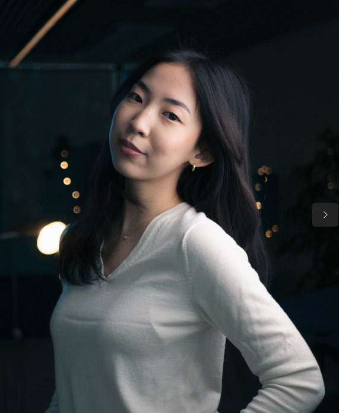

Raniia Davurova

Email: davurova.raniya@gmail.com
Phone number: +48576210552
LinkedIn: Raniia Davurova
About me
am a Computer Engineering student at Vistula University and 42 Warsaw, with a strong foundation in Linux-based systems, C programming, and Internet application design. Passionate about technology, I actively seek to expand my expertise in software development, digital automation, and IT infrastructure.
Education
Vistula University: Bachelors Degree in Computer Science 2022 - 2026 (expexted)42 Warsaw: Computer Software Engineering Bootcamp 2024 - 2026 (expected)
Work Experience
Real-Time Interpreter, Grafton Recruitment Sp. z oo (Warsaw, Poland) Jan 2024 - Present
Handling the language barrier between foreigners and native people in the USA
Assisting 50 people daily to ensure understanding of medical, financial, legal terminology
Delivered high-quality service under time-sensitive conditions, meeting client expectations
Food Service Associate, Carowinds (North Carolina, USA) Jun 2023 - Aug 2023
Collaborated with team to efficiently manage peak-hour operations, reducing wait times improving order accuracy.
Delivered exceptional customer service, addressing inquiries, upselling products, and resolving issues, resulting in positive guest feedback.
Small Business Owner/Founder, Flip (Bishkek, Kyrgyzstan) 2020 - 2023
Managed Instagram and TikTok marketing campaigns, driving substantial sales growth
Created compelling visual content and executed integrated marketing strategies
Achieved 90% of sales through social media efforts
Conducted market analysis to optimize profitability and performance
Skills
Technical Skills: C, HTML/CSS, Linux, Microsoft Windows, MacOsSoft Skills: Critical thinking and problem solving, communication, team work, flexibility
My Projects
Copyright © 2025 Raniia Davurova. All Rights Reserved.